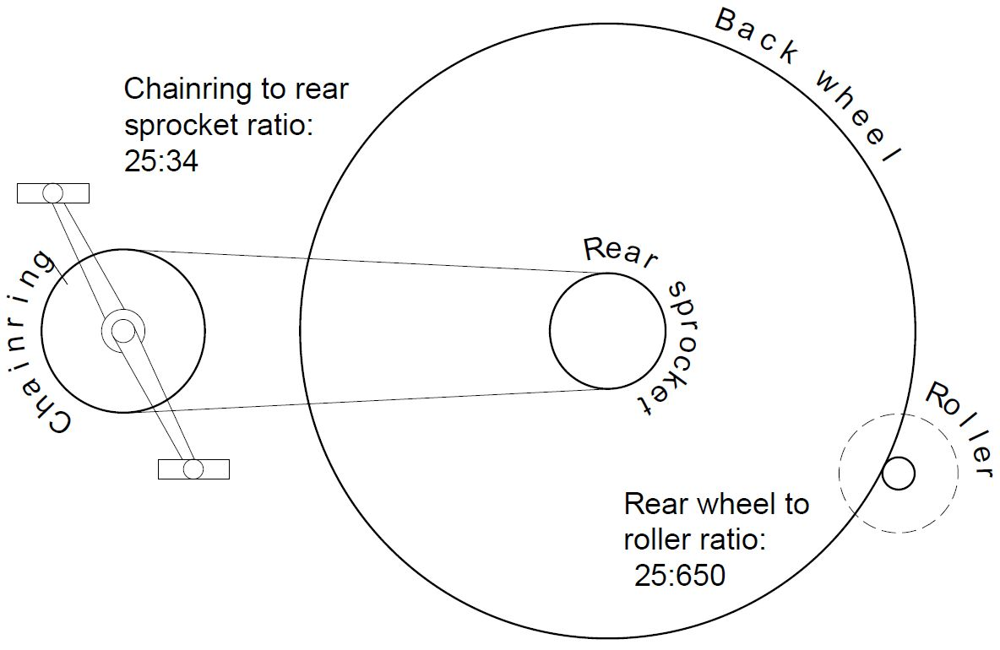
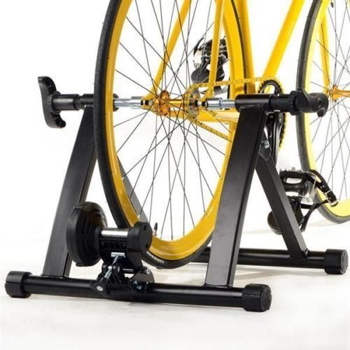
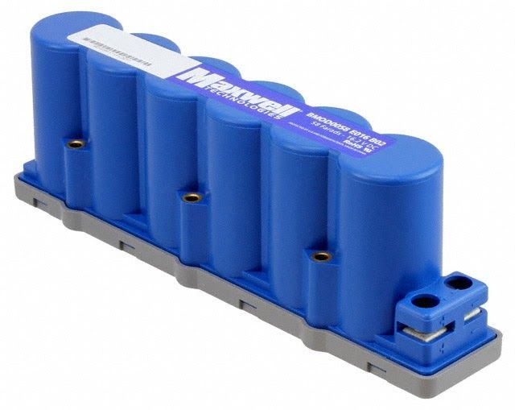
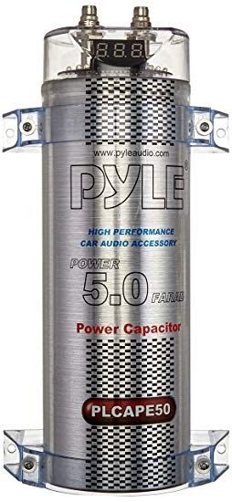
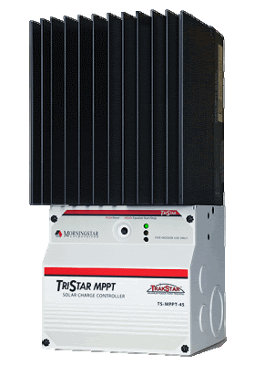

Building a Simple Bike Generator¶
Cycle powered generation works by converting the energy supplied by muscles in the human body into electricity. Cycle powered generators use electric DC motors to perform this conversion. Direct drive motors that usually spin when connected to an electrical power supply will have the potential to generate electricity when spun by some other source of power. If you use motors with the right torque and revolution ratio they can be an ideal match up to a person cycling at a steady pace.
Building and using your own generator requires a number of items. A person, a bicycle, a way of supporting your bicycle off the ground, a motor that can be turned by the bike’s drive system, and a way to regulate the voltage. Each of these parts needs to work efficiently in order to comfortably generate between 50 and 100 watts of usable power from your generator. We will cover each of the parts and how to assemble them into a simple bike generator in this D.I.Y. Guide.
People¶
At the end of the day if there are no motivated cyclists you cannot produce electricity. An average person can generate between 40 and 80 watts over extended periods (relatively fit people should be able to produce over 200W in short bursts). You should consider the pedalling speed - most people are most comfortable pedalling at a rate of around 60-80 RPM.
A Bicycle¶
Of the different types of bicycles used by people to get around, road bikes are most suitable type of bike for generating electricity because they have smooth ‘slick’ tires. Slick tyres help keep friction and noise to a minimum. Road bikes are designed to be efficient on smooth roads. You will generally get more watts from a road bike than a town bike (designed for comfort) or a mountain bike (designed for bumps and jumps).
Drive system and gears¶
All bicycles use cogs and a chain to transfer power from the rider to the wheels. This allows the wheels to turn much faster than the rider is pedalling. Bikes with multiple gears have the advantage that they can change the ratio of power transfer, meaning cyclists of different abilities can use them.
Single speed bikes have the advantage that the cyclist cannot change gear to alter the pedalling speed under high loads. Therefore you can almost guarantee the same power output from each person.
The ratio of pedalling speed to wheel speed is determined by the ratio of the circumferences of each part. An easy way to calculate this for bike drive systems is to count the teeth on the chainring and cassette. Chainrings (the bit that the pedals are attached to) usually have between 34-50 teeth. Cassettes (the bit that’s on the back wheel) usually have between 12-25 teeth. So the ratio can be between 4.17:1 and 1.36:1. This is important for determining the rotational speed of the motor.
You should be able to get a good second hand road bike for around £100. A bike with a smaller frame is generally better to use with a bike generator - it’s easier for a tall person to use a bike with a small frame than it is for a short person to use one with a large frame. See Resource 1 for bike projects in London.
Motors¶
We have always used permanent magnet (PM) 24V DC motors in our bicycle generation systems. An electric motor is designed to spin when electricity is passed through it. However, if we use another source of power to spin the motor, the motor will become a dynamo and convert that motion into electrical power. The particular motor we use, which is used a lot of bike generators, is a 24V, 250W scooter motor which is rated at 2750 RPM - part MY 1016 (13.5A) or MY1025 (14A), which you can find on e-bay or other online marketplaces.
The speed at which the motor is turning (the amount of rotations through 360 degrees undertaken in a set time) normally measured in revolutions per minute (RPM) is directly proportional to (increases and decreases) the voltage output of the pm motor. A motor rated at 2750 RPM and 24V should generate a 12V output when spun at half its rated rotational speed - 1325 RPM.
Assuming the cyclist maintains a constant pedalling speed, a downhill gear (higher ratio) creates a larger voltage output for the motor than an uphill gear (lower ratio). To maintain the same voltage output when changing gears, the cyclist will need to either increase or decrease their pedalling speed, depending on which gear they change to.
The torque (rotational force) the cyclist applies to the pedals - normally measured in Newton meters (Nm) - is proportional to the current created by a PM motor. So to generate more current, a cyclist will need to apply more force when pedalling.
Rollers¶
The roller attaches to the motor and is turned by the back wheel on the bicycle. Working out what type of roller is suitable is mainly determined by the rotational speed needed by the motor and the size of the wheel on the bike. Adult bike wheels usually have an outside diameter of either 700mm or 26 inches (650mm).
Attaching a roller to the motor can be quite tricky. We have had some 25mm diameter steel rollers custom made for us, that slide over the motor shaft and are secured in place using a grub screw. These can be made in a metal fabrication workshop with the appropriate metalworking tools.
You might find a larger roller (30mm) works better, since it allows a slightly faster pedalling speed. You can also use 52mm skateboard wheels as rollers, that can be mounted onto the motor using a conversion shaft.
TODO MAKE BOX
Pedalling speed
Choosing your bicycle, motor and roller, allows you to determine your pedalling speed.
The force from the pedals will be transferred to the motor through the chainring, rear sprocket, back wheel and roller, with the speed determined by the ratio of circumferences of each. With a low gear ratio of 1.36:1, the overall ratio from motor to pedals will be 35.4:1. To maintain a rotational speed of 1325 RPM at the motor, the pedals will need to be rotated at (1325 $div$ 36.4) 37.5 RPM, or roughly 1 rotation every one and a half seconds, which - while a little on the slow side - is a comfortable pedalling speed.

Training stands¶
We use a training stand (turbo trainer) as a frame for our generator. These can be bought new or second hand from ebay.
The important thing to look for on a training stand is the tensioning system, which usually holds the resistance roller that is used to provide friction when pedalling. Good ones to look for have the resistance roller mounted on a small metal plate. Removing the resistance roller provides an easy and convenient point to attach the motor and generator assembly onto the training stand. Minoura are a good brand to look for when buying training stands, but other less expensive options exist.
These training stands tend to fit better on bikes with quick-release rear axles, so if you have a bike that will be used regularly with the bike generator consider fitting one.
You could, if you were so inclined, design and build your own bespoke frame and tensioning system, and it’s several examples of bike generator projects using custom stands can be found online to refer to if you want to go down that route, but that approach is not going to be covered in this guide.

Voltage control¶
The electrical output from a bike generator with a DC motor tends to be highly variable, since most people do not maintain a constant pedalling speed when cycling. The faster the cyclist pedals, the higher the voltage generated, and there is a tendency for people using bike generators to pedal faster than is needed. There are a number of options for smoothing and controlling the electricity from a bike generator system.
Voltage Regulator Option¶
This option uses a step-down DC to DC Converter to reduce the voltage down to a specified value. The converter can only produce a voltage lower than that supplied to it. So, if you require an output voltage of 12V then the regulator will need to be supplied with a voltage constantly greater than 12V in order to work. The voltage created by the motor in our system is directly proportional to its rotational speed. In order to create a voltage constantly higher than 12V the motor must rotate at a speed of at least 1325 RPM. How fast the motor rotates depend on:
the speed the cyclist is pedalling (faster = greater motor rpm)
the size of the rear wheel of the bike you are using (larger = greater motor rpm)
what gear the bike is in (downhill/higher gears = greater motor rpm)
If your appliance or inverter keeps switching on and off when using a DC-DC converter it is usually for one of two reasons.
the power is being generated at a voltage that is too low (the motor isn’t spinning fast enough)
the cyclist is not capable of powering the device you are attempting to power (for a device with variable power levels, this may be monetary - e.g. big bass notes on a sound system)
Capacitor option¶
 
TODO ADD BOX
This option uses a very large capacitor, sometimes called a supercapacitor or power capacitor. A capacitor connected in parallel can be used to smooth the variable output voltage from a bike generator, and has the added benefit of providing a short-term energy store to handle load surges. A capacitance of 2 Farad or greater should be adequate for a single generator. Power capacitors which are designed to provide extra bass in a car audio system usually come with a handy voltage display, and can work well in this kind of system.
Safety note: The types of supercapacitors used in bike generator systems are capable of storing a lot of energy. Because capacitors have zero internal resistance, if a short circuit is created across the positive and negative terminals, all the energy stored in the capacitor will be released at once. This will create a lot of heat, which can cause burns or start fires, and the capacitor itself might explode. This risk is present in even partially charged capacitors, so always make sure to completely discharge a capacitor using a resistor or load before working with it, and after using it.
A capacitor’s voltage will correspond to the voltage output from the motor, with a smoothing effect on any variation in output that will be more pronounced with a bigger capacitor. If a cyclist is trying to maintain a 12V power supply, they will need to keep an eye on the voltage across the capacitor and adjust their pedalling speed or gear to keep the voltage steady.
It is possible to over charge a capacitor by applying a high voltage to it. If using an unprotected capacitor you will want to include either a step-down converter or charge controller to limit the voltage going into the capacitor and prevent it from being overcharged should someone decide to pedal very fast.
Lead Acid Battery Option¶
In the same way that a capacitor can smooth the voltage output from the motor, a battery can do the same with the added benefit of providing long term energy storage.
As with capacitors, it is possible to over charge the battery which can result in ‘battery fizz’ - an excess of hydrogen gas. For a 12v lead acid battery the voltage across the terminals should be kept between 12 and 14.5 volts. Batteries with larger capacities are more effective for this purpose - small batteries can be charged or discharged much faster, which can result in fluctuating voltages.
This option has the potential to quickly ruin a lead acid battery, so you might want to avoid using a high quality expensive battery for this purpose.
If you want to protect the battery while it is connected to a bike generator, you can use a charge controller. A charge controller monitors the voltage across the battery to ensure that it isn’t too high or that the battery doesn’t become overcharged. You should use a charge controller designed for wind turbines, that will divert power into a dump load when the battery is fully charged. A common charge controller for this is the Morningstar Tristar range. These charge controllers can also be used in combination with a capacitor instead of a battery.
